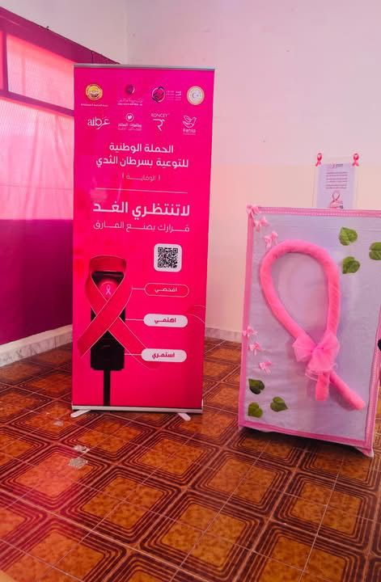

محاضرة توعوية حول سرطان الثدي
في خطوة تهدف لتعزيز الثقافة الصحية، استضاف المعهد العالي للعلوم والتقنية محاضرة علمية متخصصة بالتعاون مع مصحة المسرة...
تكريم وتقدير
اختتمت الفعالية بوقفة تقدير لجهود الفريق الطبي واللجنة المنظمة، حيث قام مدير المعهد بتسليم شهادات الشكر للمشاركين.
يؤكد المعهد استمراره في تنظيم مثل هذه الفعاليات التي تخدم المجتمع الأكاديمي والمحلي على حد سواء.
التغطية المصورة
